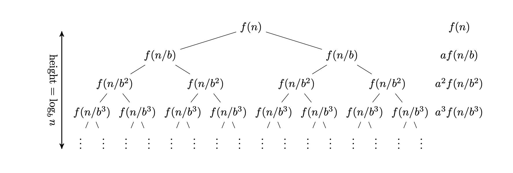

Master Theorem
-
Master theorem provides a solution to recurrence relation of the form.
`T(n)=aT(n/b)+O(n^d)` for constants `a>=1` and `b>1` and `d>=0`
There are 3 cases for master theorem:
- `O(n^d)` if `d>log_ba`
- `O(n^dlogn)` if `d=log_ba`
-
`O(n^(log_ba))` if `d\
-
Proof of Master Theorem
The master theorem expresses the above expression in form of a tree.

It can go till a maximum depth of `log_bn`. At this level, the problem has been divided to the shortest problems possible.
Work done at level 1 will be `O(n^d)`.
Work done at level 2 will be `O(n^d)*(a/b^d)`.
Work done at level k will be `O(n^d)*(a/b^d)^k`.
Total work done will be a geometric series with first term `n^d` and ratio `a/b^d`. -
Proof of Case-1: `d>log_ba`
Work required is constantly decreasing in the subsequent levels. Work done in the first level is maximum. Time complexity is `O(n^d)`. -
Proof of Case-2: `d=log_ba`
Work done in each of the levels is equal. So, final work done by multiplying the number of levels and work done on each level.
`sum_(i=0)^(log_bn)O(n^d)`
`(1+log_bn)O(n^d)`
`O(n^dlogn)` -
Proof of Case-3: `log_ba>d`
`O(O(n^d)(a/b^d)^log_bn)`
`O(O(n^d)(a^log_bn/b^dlog_bn))`
`O(O(n^d)(n^(log_ba)/n^d))`
`O(n^(log_ba))`